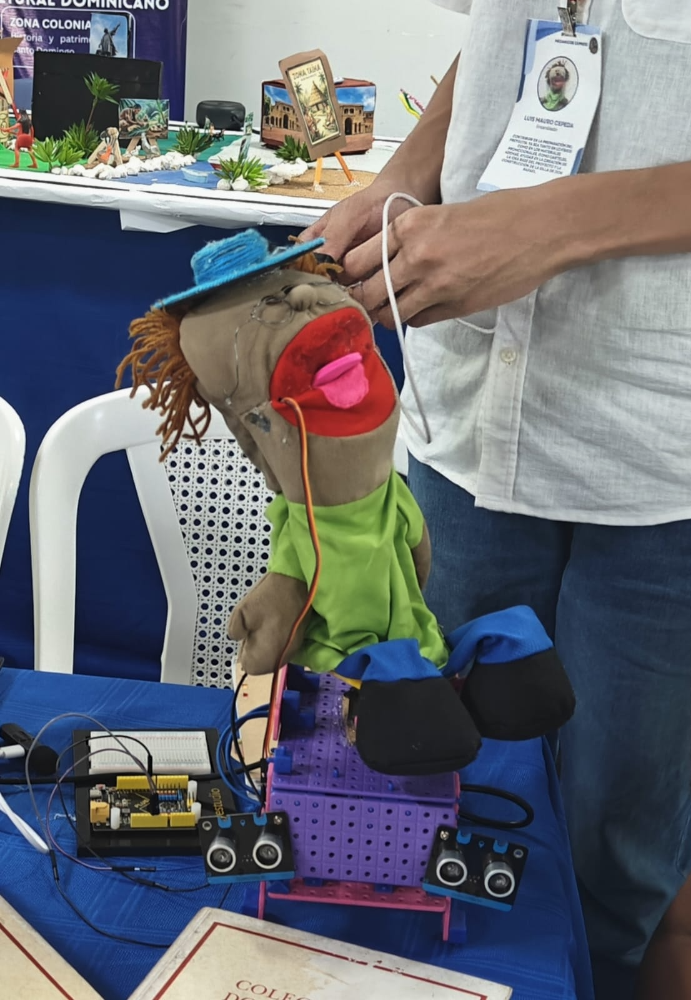

Un viaje a tu manera.
Comida, cultura, naturaleza… Empieza por lo que te gusta y por lo que te da curiosidad.
Tecnología con alma dominicana
Conoce a Ary. Una cotorra robótica que conversa contigo para acercarte a los lugares, los sabores y las historias de República Dominicana.
Un proyecto de robótica para presentar en la WRO

Hay todo un país más allá del buffet del hotel.
Una conversación. Un nuevo plan.
Ary nace de una idea sencilla: descubrir un país debería empezar con una buena conversación.
Comida, cultura, naturaleza… Empieza por lo que te gusta y por lo que te da curiosidad.
La experiencia propuesta une conversación e imágenes para que una recomendación se convierta en un lugar que quieras conocer.
El objetivo es que después de hablar con Ary sepas algo que antes desconocías y tengas más claro qué te gustaría visitar.
Donde empieza la curiosidad
Una cotorra con identidad dominicana, robótica e inteligencia artificial para acercar la cultura al visitante desde aeropuertos, restaurantes y otros espacios de encuentro.
Conoce a Ary
Ary la Cotorra es un asistente robótico cultural y turístico. Su propósito: ayudar al visitante a descubrir República Dominicana a partir de sus propios intereses.
Así está construida
Hardware, voz e inteligencia artificial se encuentran en Ary.
01 / El cuerpo
02 / La conversación
Ary utiliza Gemini para conversar con el visitante y dar voz a la experiencia de descubrimiento.
Además, Ary cuenta con un modelo entrenado que forma parte del proyecto.
El hardware hace posible la interacción física; la inteligencia artificial forma parte de la experiencia conversacional.
Escenarios de uso propuestos
Explora cómo podría encajar Ary en cada espacio.
Mientras el viajero espera o acaba de llegar, Ary podría abrir una conversación sobre qué le interesa conocer y acercarle nuevas ideas para su visita.
Una pregunta para empezar: «Ary, quiero conocer algo más que los lugares más famosos. ¿Por dónde empiezo?»
Oportunidad propuesta para una aerolínea como Arajet: extender la bienvenida al destino con una experiencia cultural. No representa una alianza confirmada.
Acerca del proyecto
Esta web incluye ejemplos guiados de la experiencia. Las respuestas están preparadas y no usan un modelo de inteligencia artificial ni se conectan al robot físico.
Estos son escenarios de uso propuestos para presentar el producto. No se han confirmado instalaciones ni acuerdos comerciales para esta versión de la web.
En «Solicitar tu Ary» puedes preparar y descargar un resumen de tu interés. El envío al equipo deberá habilitarse cuando se defina el contacto oficial del proyecto.
Nuestra historia
El proyecto tuvo un primer rostro: Don Rafael, un muñeco con Arduino y sensores. Hoy esa historia continúa con Ary, una cotorra que une robótica, conversación y cultura dominicana.
La evolución del proyecto

Antes / Don Rafael
Don Rafael era un muñeco construido con un Arduino y algunos sensores. Fue la etapa previa del proyecto, antes de dar paso a Ary.
Ahora / Ary la Cotorra
Ary está armada con una Raspberry Pi 4, cuatro servomotores, una bocina, un micrófono y un sensor de detección. Utiliza Gemini para conversar y cuenta con un modelo entrenado.
01 / La experiencia
«Terminé conociendo mejor el buffet del hotel que mi propio país».
Diez días de vacaciones en República Dominicana. Ganas de explorar, pero cada mañana la misma pregunta: «¿y hoy qué hacemos?». Si eso puede pasarle a alguien que es de aquí, también puede pasarle a quien llega por primera vez.
Así nació la idea de Ary: darle al visitante alguien a quien preguntar y una nueva razón para salir a descubrir.
02 / El objetivo
No todos buscamos lo mismo cuando viajamos. Algunos quieren probar un plato, otros conocer la historia de un pueblo o encontrar un lugar para pasar la tarde.
Queremos que el visitante converse con Ary, vea aquello de lo que están hablando y termine con una idea más clara de qué le gustaría conocer. La tecnología está al servicio de ese momento: «¡yo quiero ir ahí!».
03 / La oportunidad
Para una aerolínea como Arajet, la propuesta sería acompañar la llegada del viajero con una experiencia que conecte el vuelo con el destino. Para un restaurante, despertar interés por los sabores y las historias detrás de la comida.
El siguiente paso sería explorar un piloto: un espacio, contenidos relevantes y una forma de observar si la conversación ayuda al visitante a descubrir algo nuevo.
Propuesta comercial por desarrollar. No se presentan acuerdos, resultados ni beneficios económicos como hechos confirmados.
Conversemos sobre tu espacioSobre nosotros
Somos el equipo detrás de Ary: un proyecto que une robótica, conversación y cultura dominicana. Nuestra historia comenzó con Don Rafael, un muñeco con Arduino y sensores, y continúa con una cotorra que invita a descubrir lo nuestro.
No hace falta conocer todas las respuestas para empezar a explorar. A veces solo hace falta saber a quién preguntar.
Nuestra motivación es que las ganas de conocer República Dominicana no se queden en un «¿y ahora qué hacemos?».
La presentación para la WRO pone el foco en un problema cercano, una experiencia fácil de comprender y una propuesta de uso en espacios reales.
Conoce la historia del proyectoLo que guía la propuesta
Lugares, sabores e historias contados de una manera que despierte curiosidad y ganas de aprender.
Una interacción robótica que responde a una necesidad concreta del visitante: encontrar por dónde empezar.
Un viaje que puede empezar por los intereses de cada persona y abrirse a nuevas posibilidades.
Brochure del proyecto
Una presentación breve de Ary, su propósito y los espacios donde podría conectar con el visitante.
Ary la Cotorra
Robótica · Cultura · Turismo
El brochure tiene una versión de impresión. Desde el navegador puedes guardarlo como PDF.
Prepara los detalles de tu interés para iniciar una conversación con el equipo.
Solicitar tu Ary
Cuéntanos dónde te imaginas a Ary y qué te gustaría que tus visitantes descubrieran.